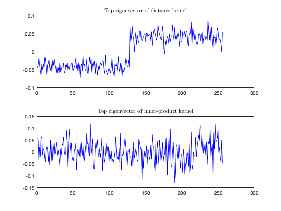
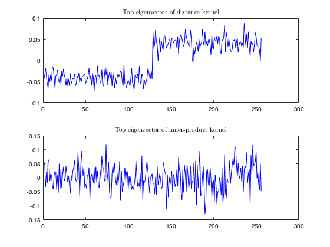

Section 4.2 Distance and inner-product random kernel matrices
This page contains simulations in Section 4.2.
Contents
Classification of two nested balls with distance and inner-product kernels
close all; clear; clc coeff = 4; p = 256*coeff; n = 128*coeff; cs = [1/2, 1/2]; k = length(cs); % nb of classes testcase_option = 'var'; switch testcase_option case 'means' means = @(i) [zeros(i-1,1);1;zeros(p-i,1)]*5; covs = @(i) eye(p); case 'var' means = @(i) zeros(p,1); covs = @(i) eye(p)*(1+(-1)^(i)/sqrt(p)*5); case 'orth' means = @(i) zeros(p,1); covs = @(i) toeplitz((4*(i-1)/10).^(0:(p-1))); case 'mixed' means = @(i) [-ones(p/2,1);ones(p/2,1)]/sqrt(p); covs = @(i) eye(p)*(1+(i-1)/sqrt(p)*10); end rng(928); W=zeros(p,n); for i=1:k W(:,sum(cs(1:(i-1)))*n+1:sum(cs(1:i))*n)=sqrtm(covs(i))*randn(p,cs(i)*n); end X=zeros(p,n); for i=1:k X(:,sum(cs(1:(i-1)))*n+1:sum(cs(1:i))*n)=W(:,sum(cs(1:(i-1)))*n+1:sum(cs(1:i))*n)+means(i)*ones(1,cs(i)*n); end P = eye(n) - ones(n,n)/n; X_center = X*P; XX = X_center'*X_center; f = @(t) exp(-t/2); K1 = f((-2*(XX)+diag(XX)*ones(1,n)+ones(n,1)*diag(XX)')/p); K2 = f(XX/p); [V1,eigs_K1] = eig(P*K1*P,'vector'); [V2,eigs_K2] = eig(P*K2*P, 'vector'); [~,ind] = sort(eigs_K1); eigs_K1 = eigs_K1(ind); V1 = V1(:,ind); [~,ind] = sort(eigs_K2); eigs_K2 = eigs_K2(ind); V2 = V2(:,ind); figure subplot(1,2,1) histogram(eigs_K1,30,'Normalization','pdf') title('Eigenvalues of distance kernel', 'Interpreter', 'latex') subplot(1,2,2) histogram(eigs_K2,30,'Normalization','pdf') title('Eigenvalues of inner-product kernel', 'Interpreter', 'latex') figure subplot(2,1,1) plot(V1(1:2:n,n),'b') title('Top eigenvector of distance kernel', 'Interpreter', 'latex') subplot(2,1,2) plot(V2(1:2:n,n),'b') title('Top eigenvector of inner-product kernel', 'Interpreter', 'latex')
 
